2019 - Sudan Capsule Collection
Capsule inspired by my time in Sudan. Reversible shirt is inspired by traditional جلابية (jilabīyah), which are reversible and have pockets on each side. Tracksuits made from Sudanese fabric, used to make traditional garments called على الله (Alallah), a garment meant for mobility and comfort in Sudan as tracksuits are in the United States.
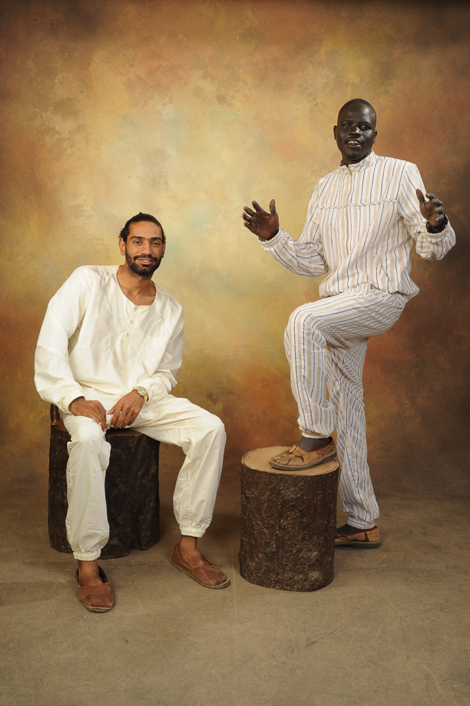 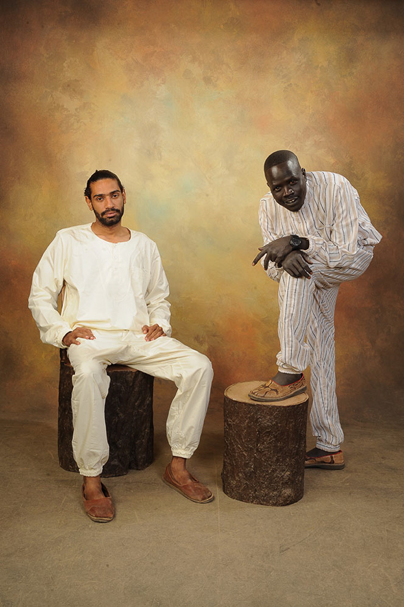 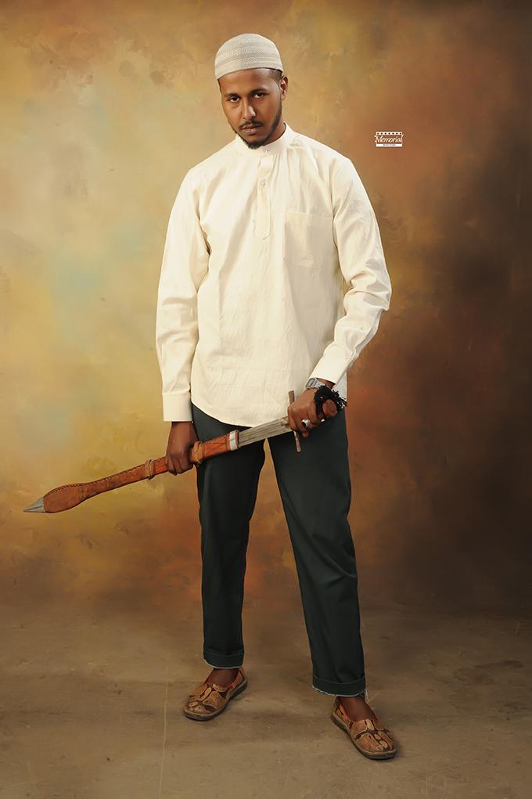 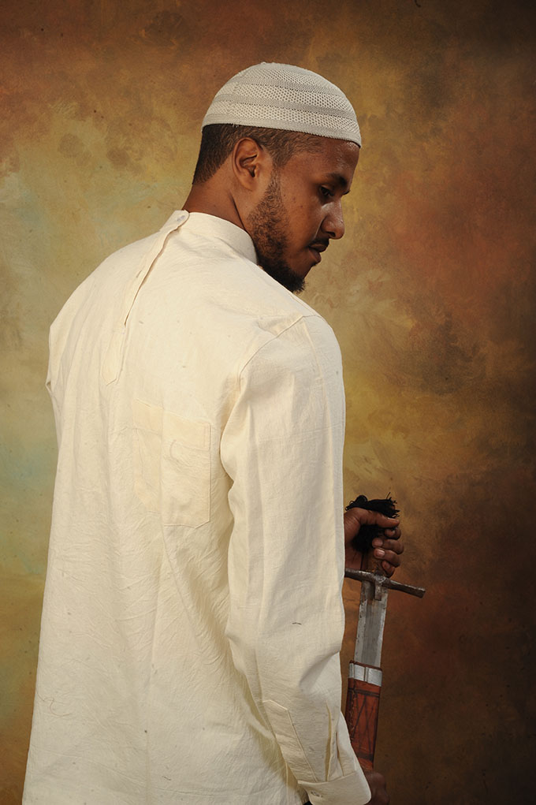 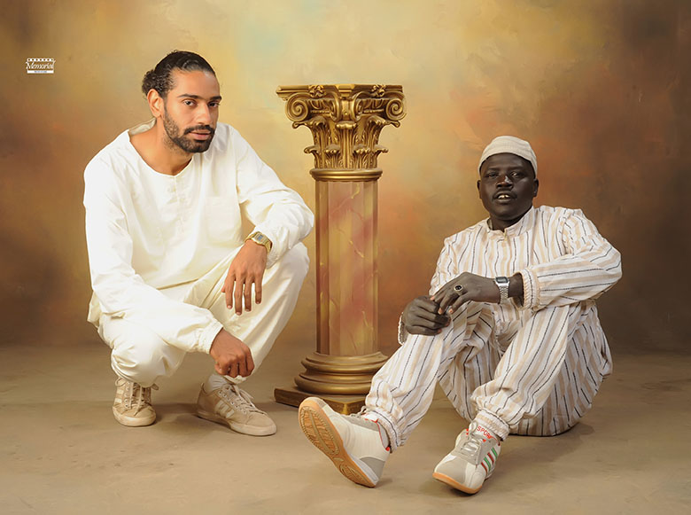2018 - Off The Cuff
I was creative director of Off The Cuff while at Boston University, a student-run art, fashion and culture magazine. Responsible for direction and production of creative multi-media content. Management of full creative department including models, make-up artists, photographers, videographers and stylists.
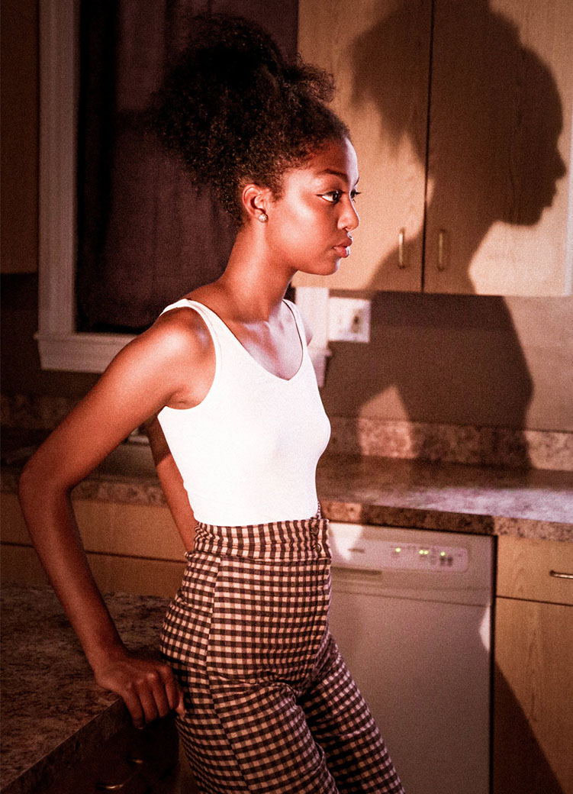 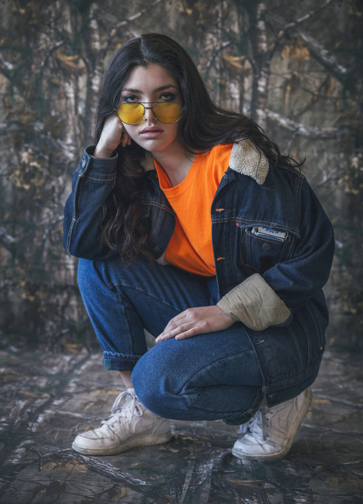2019 - Eureka Projects
Identity and website for Eureka Projects, a commercial film production company. Adaptable branding for potential company divisions.
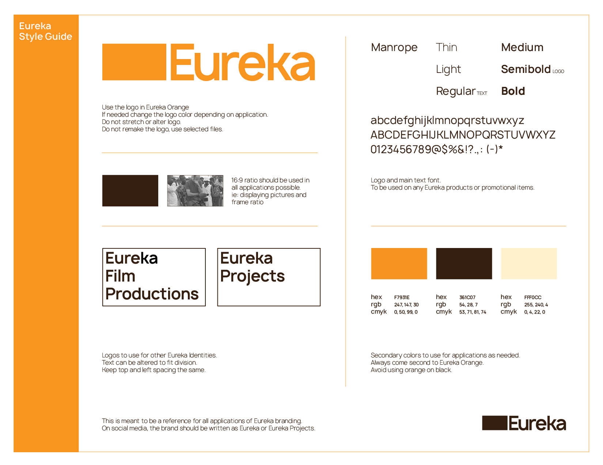2018 - Nomad Vol. 2
Cover and book design for Nomad Vol. 2 by Ronnie Feng. The book features illustrations from the author’s childhood friend, Sisi Yu. A seal, featuring a character of the author’s choosing, produced to grace the half-cover.
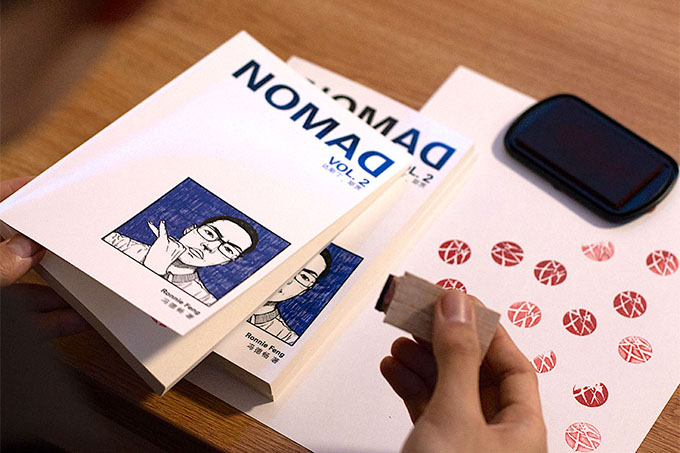 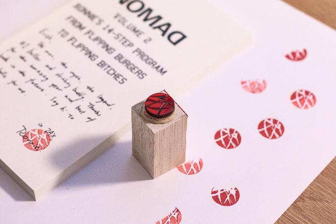2018 - EC Portrait
Exquisite corpse of my face, on a paper folded by four. Drawn by separate friends on separate dates.
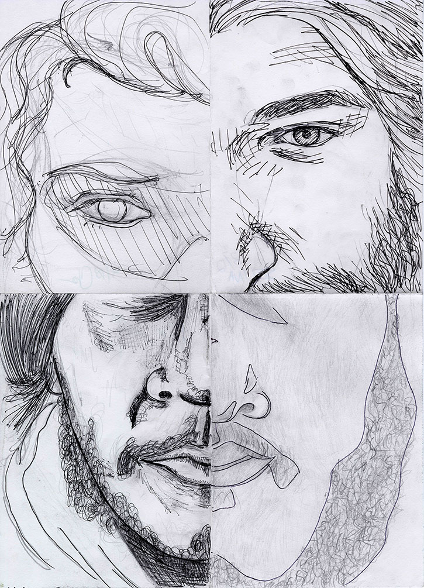 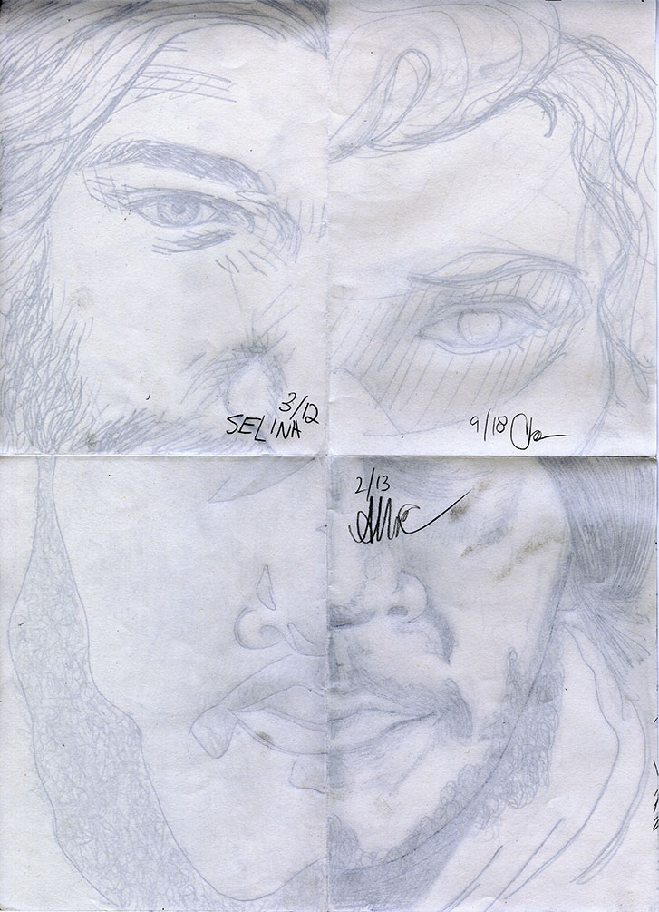2018 - Fight T-Shirts
Printed on a rolling press using four laser etched acrylic plates. Branding then silkscreened on. Printing continued till each plate was broken, each mistake is shown. Made for Child Clothing.
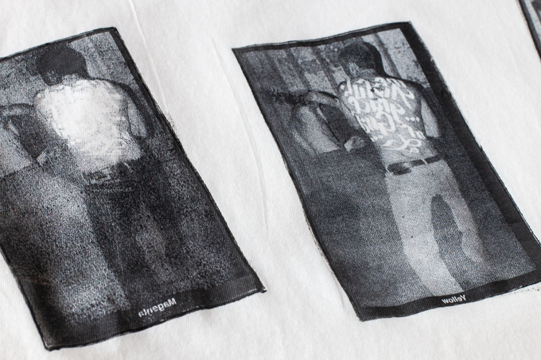 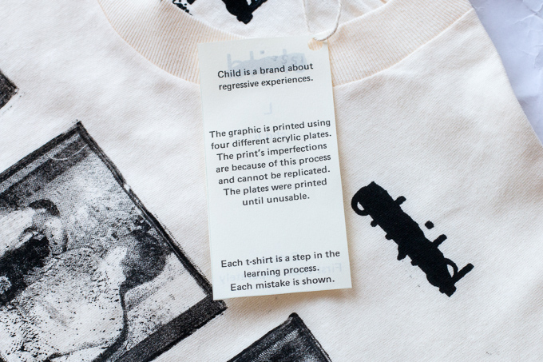2017 - Wo/man
Printed on a rolling press using four laser etched acrylic plates. Branding then silkscreened on. Printing continued till each plate was broken, each mistake is shown. Made for Child Clothing.
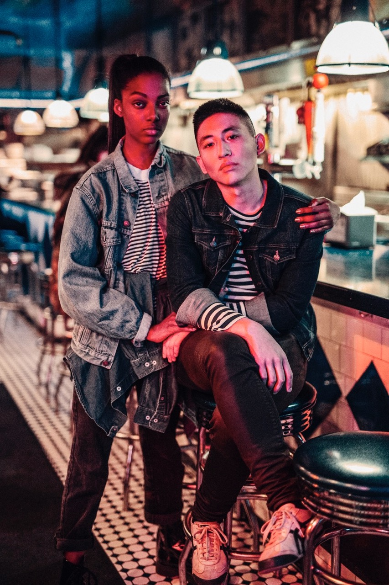 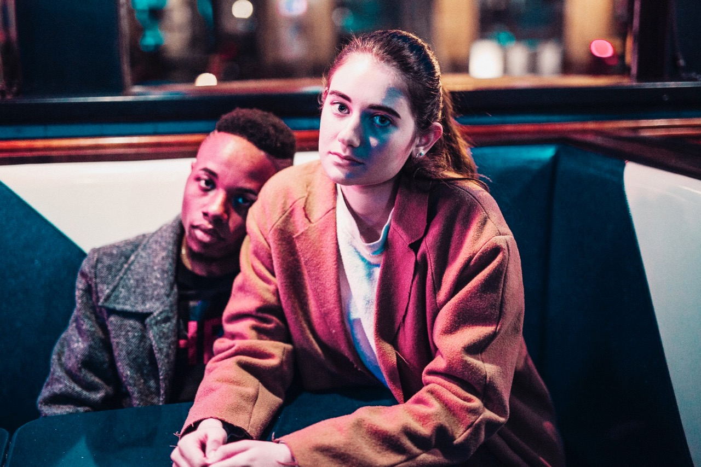 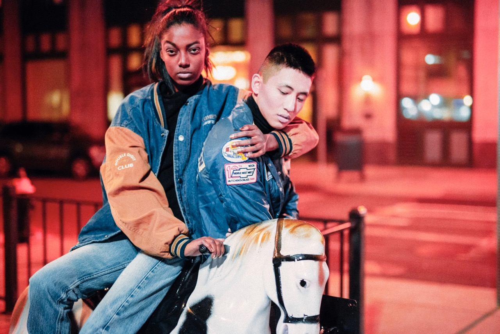Printed on a rolling press using four laser etched acrylic plates. Branding then silkscreened on. Printing continued till each plate was broken, each mistake is shown. Made for Child Clothing.